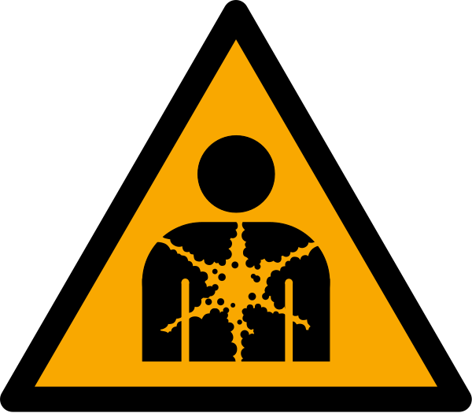

cancerígeno
definicion
Un cancerígeno es una sustancia o agente que puede causar cáncer o aumentar el riesgo de desarrollarlo.
caracteristicas
Capacidad para dañar el ADN: Los cancerígenos tienen la capacidad de dañar el material genético de las células, lo que puede llevar a mutaciones genéticas.
Inducción de cambios celulares anormales: Pueden inducir cambios en las células que las hacen crecer y dividirse de manera descontrolada, lo que conduce a la formación de tumores malignos.
Variedad de tipos: Existen cancerígenos químicos, físicos y biológicos, que incluyen sustancias químicas, radiación, virus y factores ambientales.
Dosificación y exposición: La cantidad y la duración de la exposición a un cancerígeno pueden influir en el riesgo de desarrollar cáncer.
Evaluación y regulación: Los cancerígenos suelen ser objeto de evaluación y regulación por parte de las autoridades de salud pública para limitar la exposición y reducir el riesgo de cáncer en la población.
ejemplos
Tabaco: El humo del tabaco contiene numerosos compuestos químicos cancerígenos, como el alquitrán y la nicotina
Asbestos (amianto): El amianto es una sustancia mineral que se utilizó ampliamente en la construcción y la industria
Productos químicos industriales: Sustancias químicas como el benceno, el arsénico, el formaldehído y el níquel, que se encuentran en entornos laborales e industriales
Contaminantes ambientales: La exposición a contaminantes ambientales, como los hidrocarburos aromáticos policíclicos (HAP) en la contaminación del aire y el agua
usos
Asbesto retardante de fuego y aislante termico
benceno solvente industrial y se usa para intesis de varios farmacos y gasolina
arsénico para procesamiento de vidrio, pigmentos, textiles, papel, adhesivos metálicos, protectores de la madera y municiones
formaldehído se usa como fungicida, germicida y desinfectante, así como conservante en casas mortuorias y laboratorios médicos
hidrocarburos aromáticos policíclicos (HAPs) se utilizan en medicinas y para la producción de tintas, plásticos y pesticidas
manejo
Identificación y etiquetado: Identificar claramente las sustancias y agentes cancerígenos en el lugar de trabajo o en cualquier entorno en el que se utilicen. Etiquetar adecuadamente los productos químicos y materiales que los contengan.
Evaluación de riesgos: Realizar una evaluación de riesgos para identificar las áreas o procesos donde podría haber exposición a cancerígenos y cuantificar este riesgo.
Sustitución o reducción: Si es posible, sustituir las sustancias cancerígenas por alternativas menos peligrosas o reducir al mínimo su uso.
Control de la exposición: Implementar medidas de control, como sistemas de ventilación adecuados, equipos de protección personal (EPP), y barreras físicas, para minimizar la exposición de los trabajadores y el público en general.
Monitoreo y medición: Realizar pruebas y monitoreo regular para medir la concentración de cancerígenos en el ambiente y asegurarse de que los límites de exposición ocupacional se respeten.
Cumplimiento normativo: Cumplir con todas las regulaciones y normativas
disposicion de residuos
Es obligación de quien produce residuos peligrosos separar adecuadamente y no mezclar o diluir los residuos peligrosos entre sí, ni con otros que no sean peligrosos.
Tanto los productores como los gestores tienen que cumplir las normas técnicas
Los envases y sus cierres estarán concebidos y realizados de forma que se evite cualquier pérdida de contenido y construidos con materiales no susceptibles de ser atacados por el contenido ni de formar con éste combinaciones peligrosas.
Los envases y sus cierres serán sólidos y resistentes para responder con seguridad a las manipulaciones necesarias y se mantendrán en buenas condiciones
El envasado y almacenamiento de los residuos peligrosos se hará de forma que se evite generación de calor, explosiones, igniciones, formación de sustancias tóxicas o cualquier efecto que aumente su peligrosidad o dificulte su gestión.
peligros al medio ambiente
Los cancerígenos son sustancias que tienen el potencial de causar cáncer en seres humanos o animales cuando se exponen a ellas durante un período prolongado. Estos peligros al medio ambiente pueden tener un impacto significativo en los ecosistemas y la salud de la biodiversidad.
1. Contaminación del agua: Sustancias cancerígenas, como los hidrocarburos aromáticos policíclicos (HAP), los metales pesados (como el mercurio, el plomo y el arsénico) y los productos químicos industriales, pueden filtrarse en fuentes de agua superficiales y subterráneas. Esto puede afectar la vida acuática y contaminar las fuentes de agua utilizadas por humanos y animales
2. Contaminación del aire: La emisión de cancerígenos en la atmósfera, como los compuestos orgánicos volátiles (COV) y los óxidos de nitrógeno (NOx), puede contribuir a la formación de smog y la contaminación del aire. La exposición a estas sustancias puede aumentar el riesgo de cáncer en humanos y también puede afectar a la vegetación y los ecosistemas terrestres.
3. Impacto en la vida silvestre: La exposición a cancerígenos puede tener efectos nocivos en la vida silvestre. Por ejemplo, la contaminación del agua puede dañar los hábitats acuáticos y afectar a los organismos que dependen de ellos, mientras que la contaminación del aire puede dañar la salud de la fauna terrestre.
4. Bioacumulación: Algunos cancerígenos tienen la capacidad de bioacumularse en los organismos a lo largo de la cadena alimentaria. Esto significa que a medida que los contaminantes se mueven a través de diferentes niveles tróficos, las concentraciones pueden aumentar en los organismos superiores, lo que puede tener efectos graves en la fauna y la flora.
cuidados
no existe dosis de exposición laboral ni ambiental segura a los agentes cancerígenos.
La gravedad de los daños por exposición a los cancerígenos y mutágenos hace que deban calificarse como sustancias especialmente peligrosas y que se deba proponer su eliminación/sustitución como medida preventiva
señalizacion
señalizacion de cancerigeno y mutageno
ANSI Z535 / ISO 3864 / ISO 7010
ISO W071
{kind=link}
bibliografia
https://risctox.istas.net/abreenlace.asp?idenlace=6567 https://eur-lex.europa.eu/LexUriServ/LexUriServ.do?uri=OJ:L:2008:353:0001:1355:ES:PDF